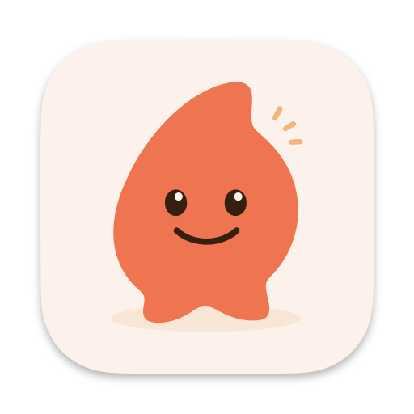
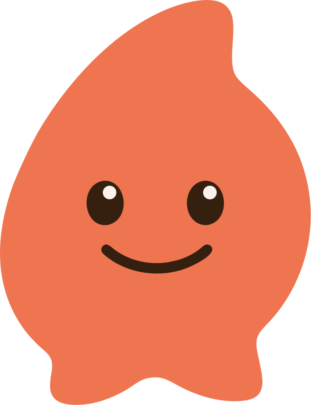

把语言变成乐高。
v0.1 把"想要的质感"摊出来了;这一份把它拆成 token、组件、Light/Dark 双主题,后面所有界面都是这套乐高拼出来的——任何一个色值、间距、阴影,都能追溯到这里。
白天的纸,深夜的木。
Light 是纸感的暖白(被太阳晒过的纸)。Dark 不是 OLED 的死黑,是深夜书房里被台灯照过的深木桌面 —— 同样温暖,只是把光关了。两套都用同一组 amber 印记保持品牌一致。
// 默认跟随系统外观,用户在 Settings · General 里可以手动锁定。本文档右上角有 Live 切换器。
原始色阶 · 组件不直接引用。
所有颜色先在这里定义,再通过下一节的语义层映射到主题。直接在组件里写 --ink-700 是错的,要写 --fg-muted。
Surface · Light(纸)/ Dark(夜)
Ink · 通用墨色阶(明暗复用)
Amber · 印染
组件只跟语义层对话。
这一层把原始色映射成"含义"——背景、前景、强调、边界、阴影。换主题等于换映射表,组件代码一行不动。
系统字 + 字距,8 阶。
规则与 v0.1 一致:全 Sans、负字距收大字、正字距开小字、不用 Italic。这里只列尺度,字体细节去 v0.1 看。
四种节奏 token。
间距走 4 倍数;圆角五档够用;阴影分 sm/md/lg(暗色用顶部高光 + 投影);动效四档,从 hover 到页面切换。
Spacing · 4 base
Radius
Shadow · 双主题感受不同(暗色靠顶部高光 + 投影)
Motion · 持续动画演示(看缓动差异)
Focus Mark + 一组 1.25px 线性图标。
Focus Mark 是 Corivo 的视觉签名(详见 v0.1)。其余功能图标走 1.25px stroke / round caps / 24×24 viewBox,跟 Lucide 同语言但跟 Focus Mark 同一手感。
系统印记 + 角色出场,各司其职。
Focus Mark 是日常工作时安静在场的它(系统印记)。这只小人,是它偶尔露脸的样子(角色出场)。两个 register 不矛盾——日常克制,关键时刻一只暖色露一下,反差正好造出温度。
App Icon · 多尺度

16Mascot · 角色出场

- App icon · Dock / Finder / About
- 启动画面
- Onboarding · Welcome 与 Done
- 主窗口 · 全新安装的初次空状态
- "成就时刻"的偶尔露脸(可选)
双 register · 何时用哪个
- Sidebar 品牌位
- Quick Ask context tag
- 引用 frame chip
- 状态徽标 · 对话气泡前缀
- 键盘提示 · 工具调用
- App icon · Dock / Finder
- 启动画面 · About 页
- Onboarding · Welcome / Done
- 初次空状态(主窗口)
- "成就时刻"(可选)
附加 token · brand-coral
所有积木 · 按需取用。
每一块都引用语义 token,跟主题一起明暗切换。复杂组件(Dialog / Drawer / Toast)在这里用 mock 形式呈现尺度与肌理,真实交互在 Step 2B 各场景里落实。
还没问过我什么。
双击 ⌥,或在这里开始一句话。
Dialog / Drawer · 形态预览。
真实使用方式去 Step 2B 的具体场景看。这里只展示外形与肌理,确认尺度对了再往下。
允许 Corivo 读取这个文件吗?
corivo-agent 请求工具调用 · read_file
{ "path": "/Users/lz/projects/foo.ts" }